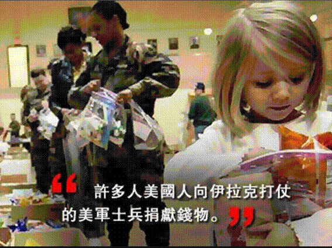
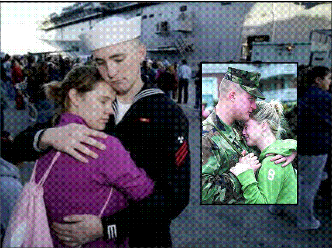
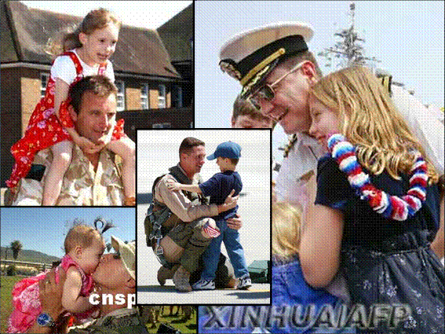
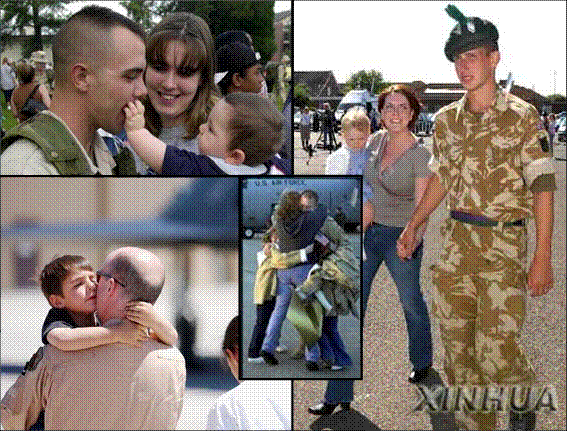

四、运用社会支持
社会支持包括：
- 情感支持（指向他人提供鼓励，表示关心与爱意，面对困难时伴随左右，使人感到温暖）。
- 具体支持（指提供财力帮助、物质资源或具体建议指导等）。
- 信任支持（指向个体传达赞扬或肯定的信息，从而提高个体的自信心）。
一个人通过社会支持系统能够获得减轻心理应激反应、缓解精神紧张状态、提高社会适应能力的效果。
04:40
历次战争表明，并不是高强度的作战，战斗应激发生比例就高，强度不大的战斗，也可能造成大的心理创伤。
案例：越南战争,表明后方民众、亲人支持的重要性。
案例：伊拉克战争
美国国防部利用非政府组织、基金会、志愿者等社会力量在美国社会掀起支前浪潮。
出征前的亲人送行，唤起天然的心理情感联系。
用飞机向前线运输亲人、民众信件，激励军心。
利用现代信息技术和多媒体技术，把前线官兵情况及时传达后方。通过视频连线、电视采访等，加强一线战士与后方群众血肉联系。
10:46
轮战、休整部队归国时，美军会组织其亲人到现场迎接，起到很好的情感鼓励、奖赏、慰藉作用。

>
11:39
部队中的领导力、团体凝聚力以及社会支持系统都是军人作战动力的来源，也是可以控制、改变、调整的，可以通过改进团队支持系统来降低战时应激反应水平，这也是战场负性应激心理援助的主要立足点之一。
16:24
第三节 战时心理防护预案制定
一、战时心理防护预案及其构成要素
- 战时心理防护的概念
- 制定战时心理防护预案的依据
- 战时心理防护行动预案的主要内容
- 制定战时心理防护工作预案的基本原则
预案：是指根据未来可能发生的应急情况而制定的应对方案、措施。
战时心理防护预案：是针对战斗过程中可能出现的各种心理情况，从心理防护角度采取相应措施进行解决，从而激励军心士气，保持部队凝聚力、战斗力的预想方案。
23:23
（一）制定战时心理防护预案的依据
一是 条令条例；
二是 优良传统；
三是 战争特点；
四是 任务要求；
五是 知己知彼
（二）战时心理防护行动预案的主要内容
第一部分是心理防护的指导思想。
第二部分是心理防护的主要任务。
第三部分是战时心理防护力量的编成与职责。
第四部分是战时各阶段心理防护基本内容。
第五部分是战时心理防护工作的基本要求。
34:12
（三）制定战时心理防护工作预案的原则
一是要符合作战任务要求。
二是情况设置要合理。
三是要符合部队情况。
四是要层次分明。
二、制定战时心理防护预案的注意事项
（一）把握政策，执行法规
（二）军政统一，结合任务
（三）全程检验，做好配套
（四）立足平时，跟进修订
军人心理是战斗力必不可少的一环； 提高心理防护能力就是保护战斗力； 心理能力的衰减既可预防也可恢复； 心理防护也是战斗力生成方式之一。